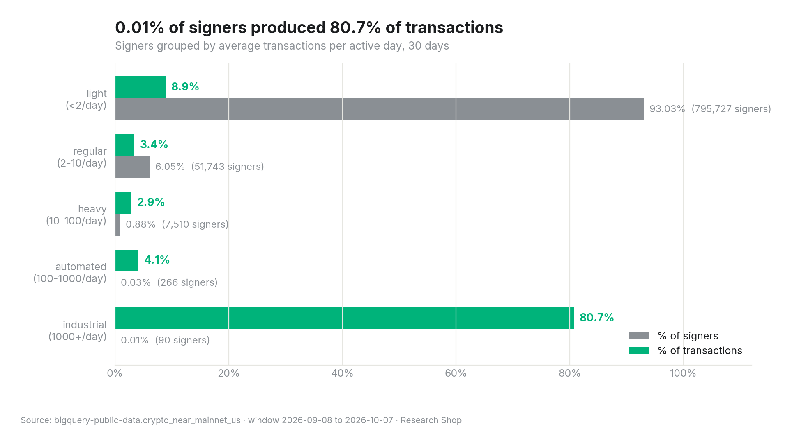
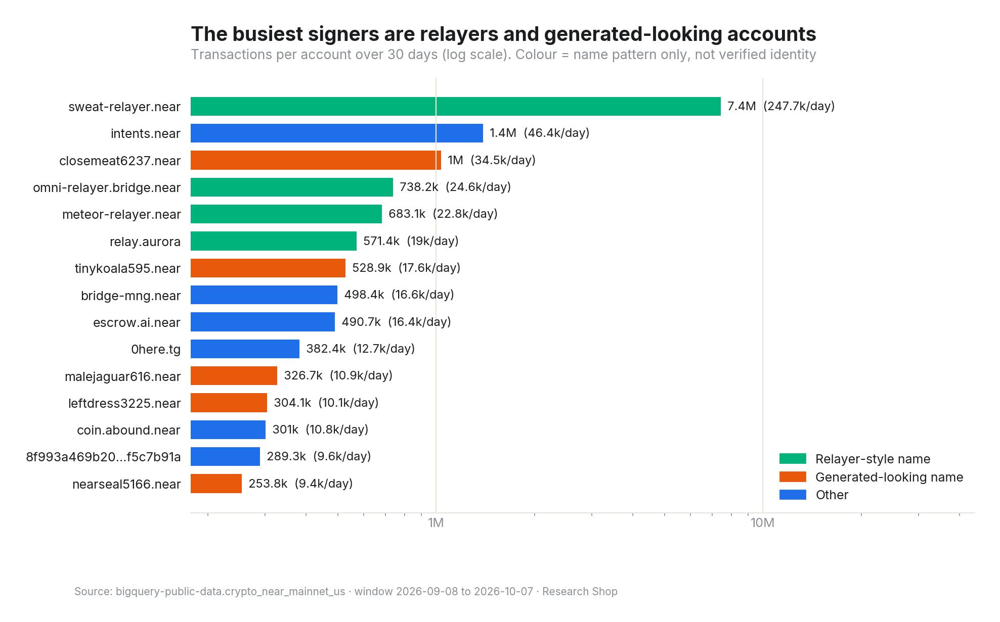
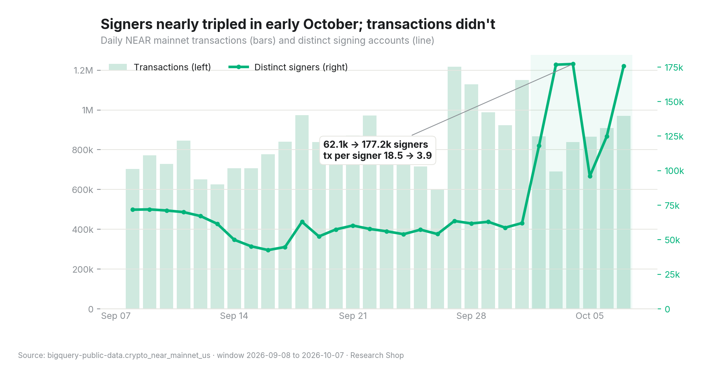

NEAR activity: real users or bots?
sweat-relayer.near
Evidence for
- 90 signers (0.01% of all signers) produced 80.7% of all transactions: 20,446,122 transactions, each from a signer averaging 1,000+ per active day.
- Light users are the majority of signers but a small share of volume. 795,727 signers (93.03%) averaged fewer than 2 transactions per active day and produced 8.9% of transactions.
- Concentration is persistent. The 10 busiest signers produced between 45.3% and 69% of each day's transactions. The 100 busiest produced between 65.7% and 91.5%.
- The busiest signer,
sweat-relayer.near, sent 7,429,693 transactions, an average of 247,656 per day, active all 30 days. - Several top-15 signers have generated-looking names (e.g.
closemeat6237.nearwith 1,036,408 transactions). Each was active all 30 days at 10,136 or more transactions per day. That fits automated operation, but identity isn't established.


Evidence against
- Relayers carry real users. With NEAR meta-transactions, a relayer signs and pays gas for a user's action. Signer-level analysis undercounts the users behind relayers. It doesn't prove the activity is fake.
- The busiest day was broad-based. The peak of 1,217,209 transactions on 2026-09-27 came with the top-10 share falling to 46.1%.
- Signers surged in early October. They went from 62,105 to 176,719 in two days and stayed high, while transactions per signer fell from 18.5 to 3.9. Real growth, or a campaign, airdrop or sybil wave? This data can't tell them apart.
Update (2026-11-02). The follow-up NEAR thesis attributes this surge to one app: the new signers were sub-accounts of KaiChing (
*.users.kaiching) signing directly, and they stopped soon after. That points to one app's campaign rather than broad organic growth. The figures in this report are unchanged.

What would change the conclusion
- Attributing relayer traffic to end users. If hundreds of thousands of distinct users sit behind relayers, NEAR's real user base is far larger than its signer count.
- Retention of the October signers. If most stay active for 30 days, it's real growth. If they vanish, it was a campaign or sybil wave. Update (2026-11-02): the follow-up NEAR thesis attributes the surge to KaiChing sub-accounts, which stopped signing soon after.
- Funding graph of the generated-name accounts. Shared funders would mean one operator.
Check it yourself
Every result ships with a SHA-256 fingerprint. One command re-runs the four queries on BigQuery and compares:
make verify-cached # no Google account needed → REPRODUCED ✅ make verify # re-runs all 4 queries live (~3 GB) → REPRODUCED ✅
A checker refuses to publish any number in the text that isn't in the query results. All 36 numbers in this report trace back to the data.
Download the full report (PDF) Commission a report on your protocol
NearBI is an autonomous research agent built at NEAR HACKATHON. It's paid in any token through NEAR Intents, buys its own inference on NEAR AI Cloud, and splits revenue onchain.